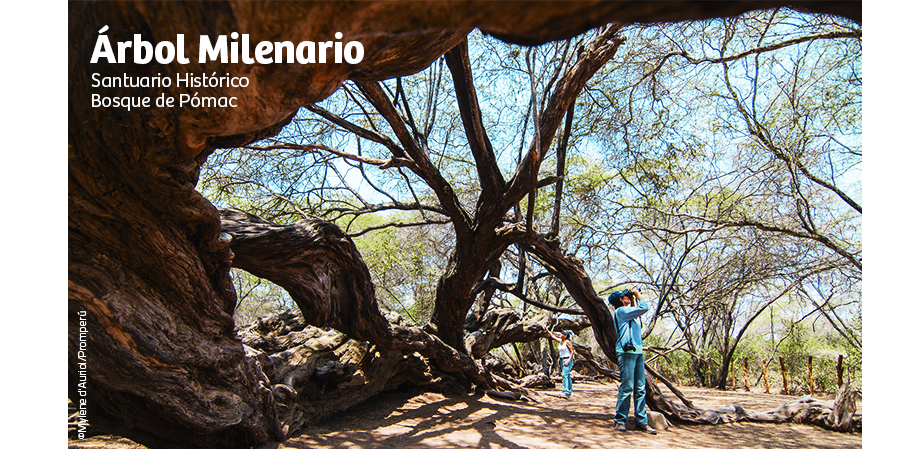

Iniciar Sesión
Iniciar Sesión
Olenka Alisson Gonzales Vásquez
Mi web personal
LUGARES TURÍSTICOS DE LAMBAYEQUE
Pirámides de Túcume

Es uno de los sitios arqueológicos de Lambayeque que debes visitar en tu viaje a Perú, situado en el denominado Valle de las Pirámides con sus majestuosas construcciones y la belleza de su entorno. Las edificaciones son restos de numerosas pirámides o Huacas de adobe hechas sobre una estructura rocosa y construidas por la cultura Lambayecana entre los años 700 y 1000 d.C. Te resultarán atractivos el Templo de la Piedra Sagrada ya que en su interior se encontraron piezas de plumas bañadas en oro, el Templo del Ave Mítica así denominado por estar decorado con diseños de aves y la Huaca de las Balsas con adornos de estas embarcaciones y redes marinas. Para llegar de Chiclayo a Túcume tardas unos 25 minutos. A partir de allí debes tomar una moto-taxi que en 10 minutos te dejará en las pirámides. Te toparás con todo un mundo por descubrir en uno de los atractivos, arqueológicos y turísticos de Lambayeque.
Santuario Histórico Bosque de Pómac
El Santuario histórico Bosque de Pómac comprende el entorno natural de Batán Grande, en él se fusionan la diversidad de su reserva ecológica y cultural para brindarte una mezcla inolvidable de naturaleza e historia. Es albergue de varias decenas de aves, algunas de ellas endémicas ,también acoge la más densa formación de algarrobos del planeta. Como atractivo especial encontrarás el árbol milenario: algarrobo de forma caprichosa de gran tamaño y edad, reconocido por los lugareños como fuente de energía, por lo que no debes dejar de tocarlo. Desde el mirador Las Salinas podrás apreciar el majestuoso y extenso bosque de Pómac con las pirámides de Sicán. El Santuario, por su belleza, es uno de los lugares para acampar en Lambayeque, pero además podrás, caminar, obtener información y visitar sitios arqueológicos, y contemplar reptiles de múltiples colores. Puedes llegar al Santuario ubicado en la provincia de Ferreñafe en 25 minutos desde Chiclayo, con un mapa del sitio seguro no te perderás.
Reserva Ecológica Chaparrí
Es una iniciativa privada de conservación en la que se intenta combinar el turismo con el uso adecuado de los recursos naturales y la participación activa de la comunidad campesina. En acción conjunta Estado-comunidad se ha venido recuperando el hábitat natural de una variedad de fauna en peligro de extinción como el oso de anteojos, la pava aliblanca el zorro costeño y el cóndor de los andes. Chaparri es uno de los lugares campestres de Lambayeque en el que podrás hacer tours como el de las pavas, de los osos, de la Huachuma en las que observarás fauna en su hábitat natural. Es posible también hacer paseos a caballo o en bicicleta, safaris fotográficos y observar mariposas. Estarán a tu disposición servicios tales como alojamiento, contratación de arrieros, centro de interpretación y alquiler de caballos. Es recomendable que lleves ropa ligera, impermeable, calzado resistente y mucha disposición a aprender, por la novedosa forma de hacer turismo ecológico es uno de los mejores destinos turísticos en Lambayeque. La reserva está a 90 minutos de Chiclayo, cerca de Chongoyape.